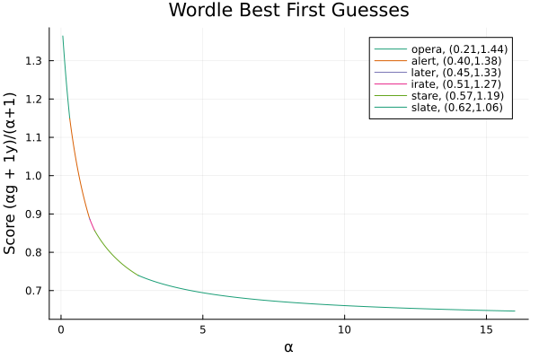

Wordle strategy slider
Slider: α =
Change the value of the slider to change how strongly you value greens over yellows
Wordle fun facts: (Photutorial wordle statistics 2023)
- Global average is 4.016 guesses to solve
- Top country is Sweden with 3.72 guesses to solve
- The best US city is St. Paul, MN with 3.51 guesses to solve (go MN!)
- Using information theory (different from here), can average 3.42 guesses to solve
- Note that city and country results are from twitter, hence may be biased lower
Strategy charts
